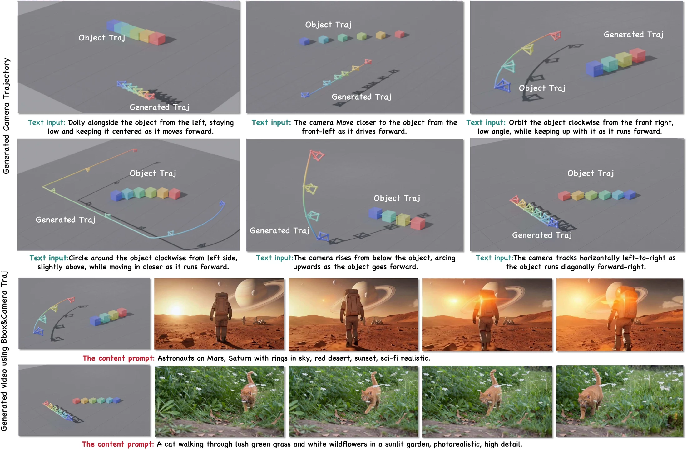
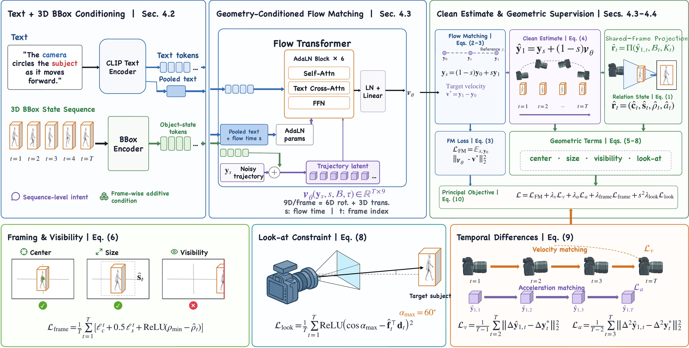
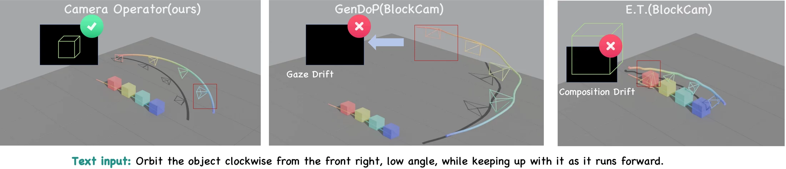
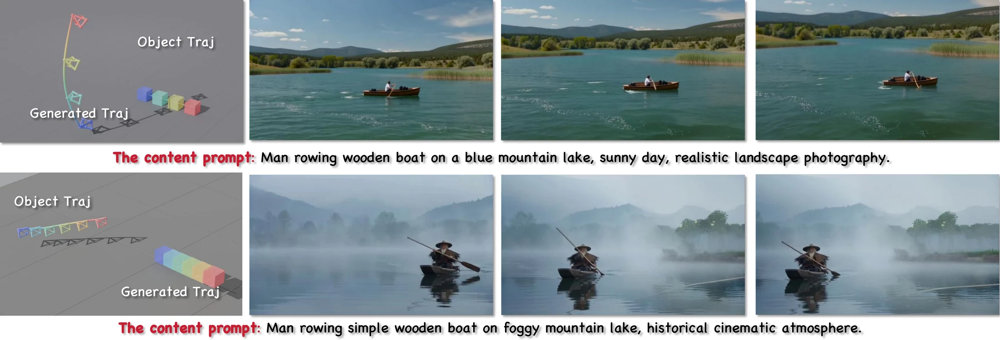

Language selects intent
A natural-language instruction describes high-level motion such as orbiting, following, approaching, or changing viewing angle.
Language specifies sequence-level cinematographic intent. Dynamic 3D target boxes provide the frame-wise geometry needed to preserve framing, visibility, and viewing direction.
1Tsinghua University · 2Hong Kong University of Science and Technology · 3Sun Yat-Sen University
* Project lead. † Corresponding author.

Core idea
Camera motion is underdetermined: a single scene can admit many valid shots. The geometric relation losses define admissible regions instead of requiring exact relation matching to one reference path. Language selects the kind of shot, while target geometry keeps the shot viable over time.
A natural-language instruction describes high-level motion such as orbiting, following, approaching, or changing viewing angle.
Target location alone is not enough. A time-varying box also exposes extent and orientation—the cues needed for scale, composition, and look-at control.
An intermediate clean trajectory estimate makes projection-space relation supervision available throughout training, not only after generation.
Method
Text and box-state encoders provide complementary conditions to a trajectory transformer. Framing, visibility, look-at, velocity, and acceleration objectives act on the estimated clean trajectory in a shared geometric frame.

Qualitative behavior
The paper evaluates text–trajectory alignment, trajectory distribution, and camera–target relation preservation under its reported protocol. The qualitative comparison below illustrates the failure modes that motivate full 3D target grounding.

Downstream use
Camera Operator produces camera motion, not RGB video. Its predicted trajectory can be supplied to a downstream camera-controlled video generator, while projected target boxes can support object-motion guidance.

Dataset
The paper introduces aligned language, dynamic 3D target boxes, and camera trajectories. The publication benchmark and the planned public artifact have different memberships, so their status is stated separately.
41K sequences
12K real-world + 29K synthetic · 11.2M frames
A mixed real/synthetic benchmark described by the camera-ready article. It is the data scope associated with the reported paper protocol.
37,499 sequences
A repaired-and-audited synthetic-only candidate with 150 frames per sequence. It contains no source video, rendered media, REAL annotations, Unreal project, or Fab asset.
Its membership and splits differ from the accepted-paper protocol; it is not presented as a drop-in reproduction of the main table.
The strict synthetic candidate passed the declared technical geometry, templated-text consistency, and split checks. Public hosting remains pending redistribution-rights review, a dataset license, release notices, and final archive sign-off.
Scope
Citation
The DOI has been assigned by ACM and will resolve after Digital Library activation.
@inproceedings{hu2026cameraoperator,
author = {Hu, Zhongyuan and Ma, Yue and Wang, Jiangming and
Li, Ronghui and Li, Xiu},
title = {Camera Operator: Object-Grounded Camera Trajectory
Generation from Text and 3D Bounding Box Sequences},
booktitle = {Proceedings of the 34th ACM International Conference
on Multimedia},
year = {2026},
doi = {10.1145/3767308.3835459}
}